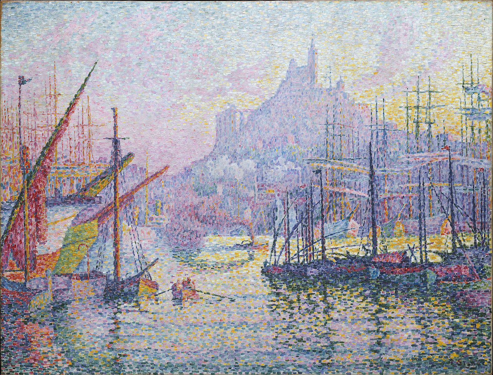

Art Gallery Showcase
Here are my top favorite pieces of art from a variety of periods.

This artwork uses a mixture of pink, blue, and red colors effectively. His strokes are mosaic-like arrangements that create a bold and distinctive look of the entrance to the port that faces the hill of Notre-Dame-de-la-Garde church. This is one of my favorite paintings due to its usage of colors and strokes.
 This artwork is a symbolic image of the tree and the only landscape painting that Klimt has done. This tree is characterized by its swirling branches with figures on opposite sides. This is one of my favorite paintings because it may seem simple but it prompts the viewer to look closer and examine its intricacies.
This artwork is a symbolic image of the tree and the only landscape painting that Klimt has done. This tree is characterized by its swirling branches with figures on opposite sides. This is one of my favorite paintings because it may seem simple but it prompts the viewer to look closer and examine its intricacies.
 It is a painting that depicts the legendary nightclub that is filled in its regulars in Paris. At the right edge of the painting, the singer May Milton pops out with her harshly lit face. The original canvas was cut down since the painting was hard to sell due to the singer’s strange appearance. I like this painting because it draws your attention to the singer and makes me wonder why the artist made the choice for the singer to stand out in the nightclub.
It is a painting that depicts the legendary nightclub that is filled in its regulars in Paris. At the right edge of the painting, the singer May Milton pops out with her harshly lit face. The original canvas was cut down since the painting was hard to sell due to the singer’s strange appearance. I like this painting because it draws your attention to the singer and makes me wonder why the artist made the choice for the singer to stand out in the nightclub.
 It is the painting that depicts a fireworks display in London’s Cremorne Gardens. This artwork was the centerpiece of the issue between the artist and art critic, John Ruskin that was eventually won by Whistler. I like this piece because it depicts the mood when seeing the fireworks in the night.
It is the painting that depicts a fireworks display in London’s Cremorne Gardens. This artwork was the centerpiece of the issue between the artist and art critic, John Ruskin that was eventually won by Whistler. I like this piece because it depicts the mood when seeing the fireworks in the night.
 It is an artwork that depicts an artist painting his model. Vermeer is known for his depictions of everyday life in the Netherlands. I like this artwork because it provides a glimpse of how an artist does his work.
It is an artwork that depicts an artist painting his model. Vermeer is known for his depictions of everyday life in the Netherlands. I like this artwork because it provides a glimpse of how an artist does his work.
 It is a painting that depicts the princess of Spain visiting her parents, who are having their portrait painted. It is considered one of the masterpieces in the Spanish Baroque era. I like this artwork because there are several layers of composition in this piece that can be examined.
It is a painting that depicts the princess of Spain visiting her parents, who are having their portrait painted. It is considered one of the masterpieces in the Spanish Baroque era. I like this artwork because there are several layers of composition in this piece that can be examined.
 It is a painting that depicts diners who are lost in thought and not actively engaged with the conversation at hand. Hopper was inspired by a restaurant he saw in New York. This is one of my favorite paintings because it captures the serene moment in the city during the night after the day’s work has been completed.
It is a painting that depicts diners who are lost in thought and not actively engaged with the conversation at hand. Hopper was inspired by a restaurant he saw in New York. This is one of my favorite paintings because it captures the serene moment in the city during the night after the day’s work has been completed.
 It is a painting of a cafe taken at night. This painting is characterized by Van Gogh’s relaxed mood with the cafe’s luminescent yellow light in contrast to the starry sky above. This is one of my favorite paintings because I can feel the night life of the cafe as a spectator although I am not physically present. In addition, this cafe still exists and is renamed as Cafe Van Gogh.
It is a painting of a cafe taken at night. This painting is characterized by Van Gogh’s relaxed mood with the cafe’s luminescent yellow light in contrast to the starry sky above. This is one of my favorite paintings because I can feel the night life of the cafe as a spectator although I am not physically present. In addition, this cafe still exists and is renamed as Cafe Van Gogh.